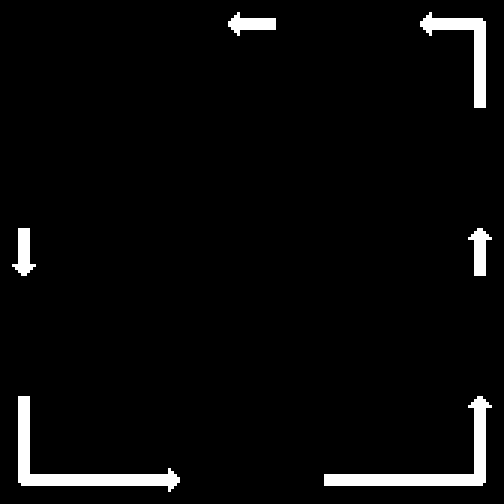
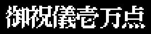
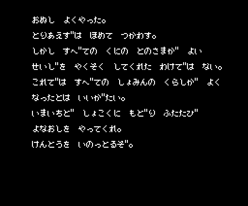
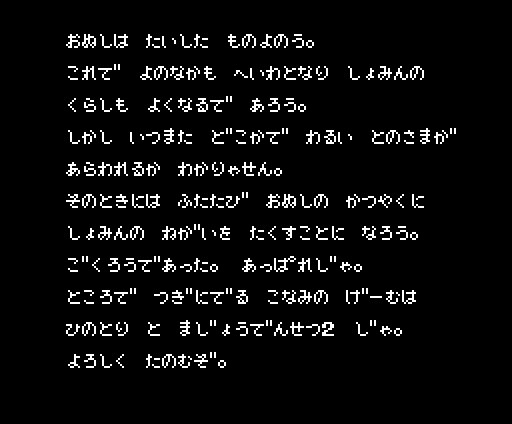
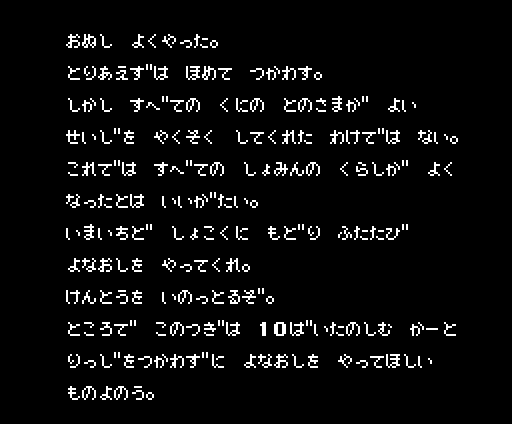
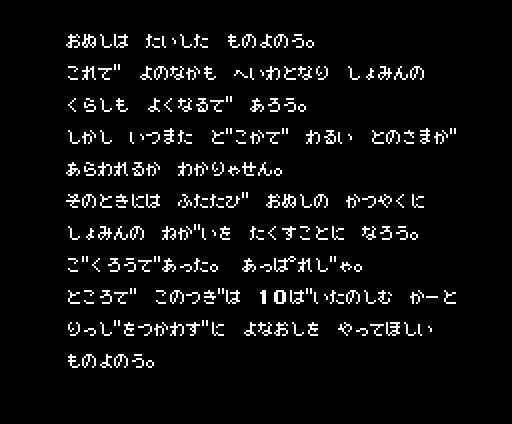

Ganbare Goemon! only came out in Japanese. Here are all of its texts, taken from the ROM with tools/textos.py (make textos), each with its address, what asks for it and a translation. The translation is ours, not Konami's, and it is not taken from the English translation patch by MSX Translations.
letras_del_texto (p00:4A6D) uploads to page 1 of the VDP 0x91 one-bit characters from 0x929D (bank 14) and 10 more from 0x9725. Character c lands at x = (c mod 32) × 8, y = (c / 32) × 8 + 0x38 (p00:491C), so the first one is 0x20. 0x20 to 0x29 are the digits, 0x2A to 0x2F KONAMI, 0x30 to 0x5D the hiragana in gojūon order (あいうえお かきくけこ...), 0x5E to 0x61 the small っゃゅょ, 0x62 and 0x63 the ゜ and ゛ marks (they come after the character and only advance 4 dots, p00:490C), 0x64 to 0x6A punctuation and 両 (ryō), and from 0x6B on pieces of drawings: large letters and frames. There are no loose katakana or kanji.rotulo, p00:48F3): x, y and the characters; 0xFE moves to another position and 0xFF ends. Each character is an 8 × 8 HMMM copy from page 1.sigue_texto, p00:42F1): 0xFE is a new line, 0xE0 + n leaves n blanks and 0xFF ends.texto_del_final (p01:653C) joins them at 0xD800 and they are typed out letter by letter.«…» in a translation is a blank gap in the label (at the dice table, for instance, the two numbers are drawn there, p03:B26D). Labels with drawings are shown as images, drawn with the ROM's own characters in white on black (in the game they take the palette colour of each screen).
The table at p12:A9C0 has 120 pointers; the last six go to 0xB6D2, where the labels end, so there are 114 (0x00-0x71). They are asked for by rotulo_numero (p00:4280) and caja_y_texto (p03:B836) with the number in A. The ROM bytes hold 22 calls or jumps to 0x4280 and 18 to 0xB836, the same as the listing, and the number each one passes is known: an ld a before it, a table or a sum.
p03:AD72).texto_al_azar (p03:B75E) in interior 20: 0x20 plus the previous one and a number from 0 to 15 taken from the R register, wrapping at 0x17; at 0x37 if items 3 and 4 of the status bar are held, and at 0x46 if item 0x0A is held as well. So the sayings come first (0x20-0x36), then the hints in verse (0x37-0x56) and last the ones that give away the codes (0x57-0x65).p12:AFDE, right after 0x34 and at the height of the next line (y = 0x50), there is a label fragment, «である。» («is.»), that no pointer points to. 0x34 ends with 0xFF before it and stays at three lines.The title, the pause, the password, the neighbour menu and the status bar. Those at 0x640F and 0x641D (each player's name with «はじまり», «start») are never written by anything.
| Japanese | Translation | Asked for by | |
|---|---|---|---|
p01:639B | ◎KONAMI 1987 / どっちで あそびまっか? / ひとりで がんばる / ふたりで たのしむ | © KONAMI 1987 / How do you want to play? / One player, giving it my all / Two players, having fun | p00:5B06, p00:5E5E |
p01:63DB | It's over | p00:5FD2 | |
p01:63E3 | F5 to continue | p00:5F9B, p00:5FDE | |
p01:636C | いっぷく | Taking a breather | p01:6369 |
p01:628A | あんごうは? | The password? | p01:6284 |
p01:6CCC | ひみつのあんごう | The secret password | p01:6BDB |
p01:7F41 | ーーーせんたくーーー / よなおし はじめる / くにの ばんごうを かえる / ごえもんのかずを かえる | — Choose — / Start setting the world right / Change the province number / Change the number of Goemons | p01:7F25 |
p01:7F94 | くにのばんごうは ? | Province number? | p01:7F86 |
p01:7FB9 | ごえもんのかずは ? | How many Goemons? | p01:7FA6 |
p01:642D | Goemon | p00:43EE | |
p01:6435 | Nezumi Kozō | p00:43EE | |
p01:63F0 | Time / Koban / ryo / Stamina / Left | p00:43F4 | |
p01:640F | Goemon: start | nothing | |
p01:641D | Nezumi Kozō: start | nothing |
Interiors: 0-15 shops, 16 the way into the secret passage, 17 the dice, 18 the inn, 19 the pawnshop that wants the boss's letter, 20 the one who gives advice.
| No. | Japanese | Translation | Asked for by |
|---|---|---|---|
0x00 p12:AAB0 | はい いいえ | Yes / No | p02:92AA, p03:B122, p03:B1A4, p03:B56A, p03:B6D1 |
0x01 p12:AABA | ちょう はん | Even / Odd | p03:B1DF |
0x02 p12:AAC3 | おきゃくさん おとまりかね | Staying the night, sir? | p03:B369 |
0x03 p12:AAD3 | どうちゅう おきをつけて | Take care on the road | p03:B52E |
0x04 p12:AAE3 | これっぽっちの おかねじゃ / とめるわけに いかないね | For that little money / I can't put you up | p03:B3E1 |
0x05 p12:AB04 | にいさん ばくちは / やるかい | Hey brother, fancy / a gamble? | p03:B1A0 |
0x06 p12:AB18 | さあ わかいの はってくれ | Come on, lad, place your bet | p03:B1DA |
0x07 p12:AB28 | (three blank lines) | p02:92AF, p03:B392, p03:B3CD, p03:B5C2 | |
0x08 p12:AB5B | でました / …の で / もってけ どろぼう | Out came / … and … / take it, you thief! | p03:B23C |
0x09 p12:AB7A | でました / …の で / また きなはれ | Out came / … and … / come again | p03:B24F |
0x0A p12:AB95 | ちょう | Even | p03:B285 |
0x0B p12:AB9B | はん | Odd | p03:B285 |
0x0C p12:ABA0 |  | (drawn arrows and corners) | p02:8125 |
0x0D p12:ABF3 | (a drawn frame) | p02:9B83 | |
0x0E p12:AC3D |  | 御祝儀壱万点: a ten-thousand-point tip (six 16 × 16 characters) | p03:BDBC |
0x0F p12:AC5B | なにか おしえようか | Shall I tell you something? | p03:B6C1, p03:B6DF |
0x10 p12:AC68 | これでおしまいだ / 両いただくぜ | That's all / I'll take … ryo | nothing (the same text as 0x11) |
0x11 p12:AC68 | これでおしまいだ / 両いただくぜ | That's all / I'll take … ryo | p03:B796 |
0x12 p12:AC80 | わかいの どうした / また なにか ききたいのか | What's up, lad? / Want to ask something else? | p03:B6C1 |
0x13 p12:AC9D | わかいの しつこいぜ / ありがね おいて / でていきな | You're a pest, lad / leave all your money / and get out | p03:B6C1 |
0x14 p12:ACC0 | わかいの なんども / おそれいった。 … の / てがみをもたせてやろう。 | Lad, time after time… / you win. …'s letter / I'll let you carry. | p03:B6C1 |
0x15 p12:ACED | かねがたりねえぜ / しんでもらうしかねえな | You're short of money / you'll just have to die | p03:B7BA |
0x16 p12:AD09 | (one blank line) | p03:AF56, p03:B149, p03:B83C | |
0x17 p12:AD1A | おきゃくさん みせは / おわったよ | The shop's closed / sir | nothing |
0x18 p12:AD2F | …のてがみを / もって ないやつは / かえっとくれ | …'s letter / whoever doesn't have it / go home | p03:B1A9 |
0x19 p12:AD52 | うちは しちや だす / なにか うりますか | This is a pawnshop / selling anything? | p03:B127 |
0x1A p12:AD6C | ようが ないなら / でていっとくれ | If you've no business here / out you go | p03:B044, p03:B154 |
0x1B p12:AD83 | にいさん まいど / こんかい とくべつに / まきもの を あげよう | Thanks, brother / just this once / have a scroll | p03:B077 |
0x1C p12:ADAC | おやぶん | Boss! | p03:B1B7 |
0x1D p12:ADB4 | ごかろう | Good work (ごかろう, as in the ROM) | p03:B1B7 |
0x1E p12:ADBC | おやぶん | Boss! | p03:B6FA |
0x1F p12:ADC4 | ごかろう | Good work (ごかろう, as in the ROM) | p03:B6FA |
0x20 p12:ADCC | なんじ じしんをしれ。 | Know thyself. | p03:B78D |
0x21 p12:ADDC | てつがくは さいじょうの / おんがくなり。 | Philosophy is the highest / music. | p03:B78D |
0x22 p12:ADF8 | きぼうとは めざめている / ゆめ なり。 | Hope is a waking / dream. | p03:B78D |
0x23 p12:AE12 | わたしは しょうりを / ぬすまない。 | I do not steal / victory. | p03:B78D |
0x24 p12:AE28 | しんの よっきゅう なくして / しんの まんぞくは ない。 | Without true desire / there is no true satisfaction. | p03:B78D |
0x25 p12:AE4A | いかりは いっときの / きょうき なり。 | Anger is a brief / madness. | p03:B78D |
0x26 p12:AE62 | なんじ の きょうは / えいえん なり。 | Your today / is eternal. | p03:B78D |
0x27 p12:AE7B | なくことも いっしゅの / かいらく なり。 | Weeping too is / a kind of pleasure. | p03:B78D |
0x28 p12:AE94 | にんげんは / かんがえる あし / である。 | Man is / a thinking reed. | p03:B78D |
0x29 p12:AEB1 | てんさいとは / にんたいである。 | Genius / is patience. | p03:B78D |
0x2A p12:AEC6 | こころは いっしゅの / げきじょうだ。 | The mind is / a kind of theatre. | p03:B78D |
0x2B p12:AEE0 | てつがくの / だいいっぽは / ふしん にある。 | The first step / of philosophy / is doubt. | p03:B78D |
0x2C p12:AEFF | わたしの えんを / みださないで ください。 | Do not disturb / my circles. | p03:B78D |
0x2D p12:AF1C | しにん に ぐちなし。 | The dead don't grumble (a twist on «dead men tell no tales»). | p03:B78D |
0x2E p12:AF2B | しらぬが とぼけ。 | Ignorance is playing dumb (a twist on «ignorance is bliss»). | p03:B78D |
0x2F p12:AF39 | てもち ぶたさん。 | Idle hands, Mr Pig (a pun on «idle hands»). | p03:B78D |
0x30 p12:AF46 | こめだわら こうたろう。 | Rice-bale Kōtarō. | p03:B78D |
0x31 p12:AF56 | ありそで うっふん / なかそね あっはん。 | Looks like it, ooh / Nakasone, aah (a pun on «looks there, but isn't» and prime minister Nakasone). | p03:B78D |
0x32 p12:AF70 | ぼくらはみんな / おきている。 / おきているから / ねむいんだ。 | We are all / awake. / Because we're awake / we're sleepy (a parody of the song «Bokura wa minna ikite iru»). | p03:B78D |
0x33 p12:AF98 | たのしきと おもうが / たのしき しんずいなり。 | Believing it's fun / is the essence of fun. | p03:B78D |
0x34 p12:AFB6 | げーむとは いきた / そうごうであり / いだいな たんじゅん | A game is a living / synthesis and a / great simplicity | p03:B78D |
0x35 p12:AFE6 | わきあがる かんどうとは / こころと かんかくの いっち / である。 | The emotion that wells up / is the union of heart and senses. | p03:B78D |
0x36 p12:B010 | せいしんてき には / あまちゅあ で / ぎじゅつてき には / ぷろであれ。 | In spirit / an amateur / in technique / a professional. | p03:B78D |
0x37 p12:B040 | うみのはし / とべば / ひよりあり | At the edge of the sea / if you jump / fair weather | p03:B78D |
0x38 p12:B058 | どうちゅうの / げんきみなぎる / やどやかな | On the road / brimming with energy / the inn | p03:B78D |
0x39 p12:B077 | ちかつうろ / とおれぬいわに / きせるうち | Underground passage / the rock that won't let you by / strike it with the kiseru | p03:B78D |
0x3A p12:B091 | はりせんに / いわおもくだく / いりょくかな | The harisen fan / smashes even rocks / what power | p03:B78D |
0x3B p12:B0AD | いわくだき / かぶとがひかる / さっきばれ | Smashing rocks / the helmet shines / a clear May sky | p03:B78D |
0x3C p12:B0CB | ときは かねなり / こばんは うなり | Time is money / koban galore | p03:B78D |
0x3D p12:B0E2 | いたづらや / すずめの ふんには / さんどがさ | Mischief / against sparrow droppings / the travel hat | p03:B78D |
0x3E p12:B102 | こめだわら / つぶされまいぞと / かぶとつけ | Rice bales / so you won't be crushed / put on the helmet | p03:B78D |
0x3F p12:B121 | まきものに / ひでん みつけて / こんてにゅう | In the scroll / I found the secret / continue | p03:B78D |
0x40 p12:B13E | ひょうたんで / たいりょく みなぎる / ふしぎかな | With the gourd / stamina overflows / how strange | p03:B78D |
0x41 p12:B15F | ろうそくの / ひかりに ひかる / いりぐちや | In the light / of the candle shines / the entrance | p03:B78D |
0x42 p12:B17B | すなどけい / ときの ぴんちに / ちょうほうし | The hourglass / when time runs short / a treasure | p03:B78D |
0x43 p12:B199 | おまもりに / ひきゃくの あしの / とおのけり | With the charm / the courier's footsteps / fade away | p03:B78D |
0x44 p12:B1B5 | ひかえおろう / このいんろうは / むてきなり | Stand back! / This inrō / makes you invincible | p03:B78D |
0x45 p12:B1D0 | ひなわじゅう / よろいが あれば / うれいなし | The matchlock / with the armour / no worries | p03:B78D |
0x46 p12:B1EF | ゆきどまり / きせるが ないてる / ちかつうろ | Dead end / the kiseru is crying / underground passage | p03:B78D |
0x47 p12:B20D | うりぼうの / さんびきへたい / かわいいな | The wild piglets / a squad of three / how cute | p03:B78D |
0x48 p12:B229 | いしがきに / あるはずなかろう / つうこうてがた | In the stone wall / it can't possibly be / the travel pass | p03:B78D |
0x49 p12:B249 | てんかける / てんぐのはなに / こばんなげ | Soaring through the sky / at the tengu's nose / throw koban | p03:B78D |
0x4A p12:B266 | うっかりと / ひきゃくに とられる / てがみかな | Careless / the courier takes / your letter | p03:B78D |
0x4B p12:B284 | おやぶんの / てがみを いただく / ひきゃくかな | The boss's / letter is taken / by the courier | p03:B78D |
0x4C p12:B2A4 | おやぶんの / てがみが なければ / よそのひと | Without the boss's / letter / you're a stranger | p03:B78D |
0x4D p12:B2C4 | きをつけろ / おばばの ばくだん / いのちとり | Watch out / granny's bomb / is deadly | p03:B78D |
0x4E p12:B2E4 | じょうほうや / おかね とられて / もらいなき | The informer / takes your money / and you cry along | p03:B78D |
0x4F p12:B301 | じょうほうや / せいかく わかる / さんかいめ | The informer / gets it right / the third time | p03:B78D |
0x50 p12:B31E | じょうほうや / せいかく わかる / てんの あるなし | The informer / gets it right / dot or no dot | p03:B78D |
0x51 p12:B33E | えれきがに / たいじの はやい / こばんなげ | The electric crab / is quickly beaten / by throwing koban | p03:B78D |
0x52 p12:B35D | とつぜんに / とびだす さかなに / おおおおお | Suddenly / a fish leaps out / whoooa! | p03:B78D |
0x53 p12:B37C | こうげきに / びくともしない / こめだわら | Under attack / it doesn't budge / the rice bale | p03:B78D |
0x54 p12:B399 | がけのふち / うかつなうごき / いのちとり | At the cliff's edge / one careless move / is deadly | p03:B78D |
0x55 p12:B3B5 | にかいめの / あいてむ かかくは / いんふれよ | The second time / the item's price / inflation | p03:B78D |
0x56 p12:B3D1 | ちかのいわ / すぴーどあっぷで / さんことび | The underground rock / with a speed-up / jump three | p03:B78D |
0x57 p12:B3F1 | きゅうばーと / じゅうばい たのしむ / べんりさよ | Q*bert / ten times the fun / how handy | p03:B78D |
0x58 p12:B413 | いつのひか / ゆくぞ ふりにむ / ねねくいあ | Some day / off I go! ふりにむ / ねねくいあ | p03:B78D |
0x59 p12:B42F | あらふしぎ / いれて つほちね / くせわえお | How strange! / put in つほちね / くせわえお | p03:B78D |
0x5A p12:B44B | ごえもんに / べんり めをほゆ / ぬへすいう | For Goemon / handy めをほゆ / ぬへすいう | p03:B78D |
0x5B p12:B468 | とんでゆく / ふしぎ きちんけ / るあまうえ | Flying off / mystery きちんけ / るあまうえ | p03:B78D |
0x5C p12:B485 | あんごうの / ひみつ えせいけ / えわふえお | The secret / of the password えせいけ / えわふえお | p03:B78D |
0x5D p12:B4A1 | うれしいわ / みりょくの のめとは / についいお | How happy / the charm のめとは / についいお | p03:B78D |
0x5E p12:B4BE | いっちゃった / すごい りいみり / めみたいた | Gone / amazing りいみり / めみたいた | p03:B78D |
0x5F p12:B4DB | おやぶん は / めいろの ちずを / くれなはる | The boss / the map of the maze / will give you | p03:B78D |
0x60 p12:B4F9 | きみちゃんげんき で / ごえもん げんき | With «kimichan genki» / Goemon's full of beans | p03:B78D |
0x61 p12:B515 | あけみさんのさいふ には / にせんりょう | In Akemi's purse / there are two thousand ryo | p03:B78D |
0x62 p12:B52D | ねずみこぞうは / くるくるてん すぺーす / ですよ | Nezumi Kozō is / «kurukuru ten» space / you know | p03:B78D |
0x63 p12:B54F | こんてにゅう / つづきがしたい と / いのります | Continue / «tsuzuki ga shitai» / I pray | p03:B78D |
0x64 p12:B56E | せんたくは / でぐちのみえる / さんかいめ | When choosing / the exit shows / the third time | p03:B78D |
0x65 p12:B58A | おみっちゃん / こばんもくれる / すきやねん | Omitchan / gives you koban too / «sukiyanen» | p03:B78D |
0x66 p12:B5A6 | わかいの どうした / まだ なにか ききたいのか | What's up, lad? / Still want to ask something? | p03:B6C1 |
0x67 p12:B5C4 | いらっしゃいませ / ひとつ どないですか | Welcome / how about one? | p03:AEED |
0x68 p12:B5DE | へい ようおこし | Hey, welcome! | p03:AEED |
0x69 p12:B5E9 | いつも にこにこ げんきん / ばらい | Always smiling, cash / payment | p03:AEED |
0x6A p12:B606 | にいさん まいど / なに さしあげましょ | Thanks, brother / what can I get you? | p03:AEED |
0x6B p12:B620 | かねも もってねえのに / ふてえ やろうだ | No money at all / and the nerve of it | p03:AEED |
0x6C p12:B63A | にいさん ふざけちゃこまるな | Don't mess with me, brother | p03:AEED |
0x6D p12:B64C | かねもないのに みせに / くるんじゃないぜ | Don't come to the shop / with no money | p03:AEED |
0x6E p12:B667 | あんた おかねがたりないよ | You haven't got enough money | p03:AEED, p03:B5C2 |
0x6F p12:B678 | にいさん みせはおわったよ | The shop's closed, brother | p03:AD72 |
0x70 p12:B688 | またこんど みせのあいている / ときに きとくれ | Come back another day / when the shop is open | p03:AD72 |
0x71 p12:B6A5 | にいさん … 両だせば / このおくの ひみつのつうろに / あんない しよう | Brother, pay … ryo / and to the secret passage at the back / I'll take you | p03:B56F |
— p12:AFDE | である。 | is. | nothing |
35 texts (p15:BC16), one per zone, typed out by p02:962F: the number is stage × 5 + zone − 1.
| No. | Japanese | Translation | Asked for by |
|---|---|---|---|
0 p15:BC5C | まずは ほんの こてしらべ | For starters, a little warm-up | p02:962F |
1 p15:BC6C | つかって べんりな じょうほうや | The informer: very handy if you use him | p02:962F |
2 p15:BC7F | おまもりあると じょうほう ふえる | With the charm, more tips | p02:962F |
3 p15:BC92 | ねこに こばん ぶたに しんじゅ | Koban to a cat, pearls before swine | p02:962F |
4 p15:BCA6 | つぎは すてーじ6だ ゆけっ | Next, stage 6. Go! | p02:962F |
5 p15:BCB8 | たんばささやま いのしし うまい | Tamba-Sasayama: the boar is tasty | p02:962F |
6 p15:BCCA | かいばらこうこう わがぼこう | Kaibara High, my alma mater | p02:962F |
7 p15:BCDC | なんてったって あいどる だい | Say what you like, I'm an idol | p02:962F |
8 p15:BCEE | ゆけば ゆくほど おくがある | The further you go, the deeper it gets | p02:962F |
9 p15:BD00 | つぎは すてーじ13だ それっ | Next, stage 13. Here we go! | p02:962F |
10 p15:BD13 | たびは みちずれ よは なさけ | On the road, company; in life, kindness | p02:962F |
11 p15:BD25 | のってきたきた あーこりゃこりゃ | Now I'm getting into it! Ah, korya korya! | p02:962F |
12 p15:BD36 | ときめきの すてーじくりあ じゃ | A heart-pounding stage clear! | p02:962F |
13 p15:BD49 | さかせて さかせて ももいろ するめ | Let it bloom, let it bloom: pink dried squid | p02:962F |
14 p15:BD5C | つぎは すてーじ20だ とおっ | Next, stage 20. Hup! | p02:962F |
15 p15:BD6F | やれば やるほど あじがでる | The more you play, the better it tastes | p02:962F |
16 p15:BD83 | こなみの わーぷろ ぜんめんくりあ | Konami's word processor: clear all | p02:962F |
17 p15:BD97 | なんだ なんだ なんなんだ | What, what, what on earth? | p02:962F |
18 p15:BDA8 | きあいを いれて それそれそれそれ | Put your back into it: go, go, go, go! | p02:962F |
19 p15:BDBA | つぎは すてーじ27だ やあっ | Next, stage 27. Yah! | p02:962F |
20 p15:BDCD | なぞめく しかけに ちがさわぐ | Mysterious contraptions: my blood is stirring | p02:962F |
21 p15:BDE0 | ここらで すこし やすまんか | How about a little rest here? | p02:962F |
22 p15:BDF0 | すてーじくりあだ ほほいのほい | Stage clear, hohoi no hoi! | p02:962F |
23 p15:BE02 | つかって べんりな かくしこまんど | Secret commands: very handy if you use them | p02:962F |
24 p15:BE16 | つぎは すてーじ34だ ほりゃ | Next, stage 34. Take that! | p02:962F |
25 p15:BE29 | わはははは いっぽん とられましたな | Ha ha ha ha! You got me there | p02:962F |
26 p15:BE3D | かくしこまんどは みつかったかな | Have you found the secret commands? | p02:962F |
27 p15:BE4F | きょだいな うめぼし まるかじり | A giant pickled plum, bitten whole | p02:962F |
28 p15:BE63 | たびゆかば いつかはあたる えどのまち | Keep travelling and some day you'll reach Edo | p02:962F |
29 p15:BE7A | つぎは すてーじ41だ たあっ | Next, stage 41. Tah! | p02:962F |
30 p15:BE8D | えどのまち いっきいっきで とっしんだ | Edo town: charge in one go! | p02:962F |
31 p15:BEA4 | ここまでくれば あとは こんじょう | This far, all that's left is guts | p02:962F |
32 p15:BEB9 | かくしこまんど きみちゃんげんき | Secret command: «kimichan genki» | p02:962F |
33 p15:BECC | ここまでくれば あんたは ぷろよ | If you got this far, you're a pro | p02:962F |
34 p15:BEE0 | つぎは えどじょう とつにゅうだ わおっ | Next, storm Edo Castle. Wow! | p02:962F |
Seven texts (p02:9E0B), one per stage, typed out by p02:9B9E. In stages 0 to 5, if the type 0x21 figure has been hit 8 times or more (0xCD60, p03:A9D3), the one at p02:9F92 comes out instead (see Findings).
| No. | Japanese | Translation | Asked for by |
|---|---|---|---|
0 p02:9E19 | おぬしの いわんと することは / よーく わかった。 こころ あらため / よい とのに なるぞ。 | I understand full well / what you are saying. I shall mend my ways / and be a good lord. | p02:9B9E |
1 p02:9E49 | なるほど おぬしは えらい。 / みあげた もんじゃ。 ほうびに / たんばの ててうちぐりを とらせるぞ | I see, you are admirable. / Praiseworthy. As a reward / I shall give you Tamba chestnuts. | p02:9B9E |
2 p02:9E82 | なるほどざ わるかったど。あやまる。 / ねんぐは ふやさん。ぼうえいひ も / けずる。 こうやく は まもるぞ。 | I see, I was wrong. I apologise. / I won't raise the tax. Defence spending / I'll cut too. I'll keep my word. | p02:9B9E |
3 p02:9EC0 | いまの おぬしのことばで / わしも めがさめた。 / おはよう なんちゃって。 | Your words / have woken me up. / Good morning! Just kidding. | p02:9B9E |
4 p02:9EE8 | いままでのわしは いのなかの おかず / いや かわずで あった。 / もっとしょみんのためのせいじをするぞ。 | Until now I was the side dish in the well, / I mean, the frog in the well. / I shall govern more for the common people. | p02:9B9E |
5 p02:9F22 | しょみんの くるしみ よーく わかった。 / もう なにも いうでない。 / よい せいじを やくそく するぞ。 | Now I understand the people's suffering. / Say no more. / I promise to govern well. | p02:9B9E |
6 p02:9F5A | ひさしいのう。ついにここまできおったか / おぬしも せいちょうした。 / おぬしの しんげん ききいれようぞ。 | It has been a long time. At last you have come this far. / You have grown. / I shall heed your counsel. | p02:9B9E |
— p02:9F92 | おぬし わしのせいじにけちをつけるか。 / いい どきょうだ。 / つぎのすてーじ おぼえておくがいい。 | You dare find fault with my rule? / Bold of you. / Remember this in the next stage. | p02:9B9E |
Seven pieces (p12:BCD3). texto_del_final (p01:6546) picks one of four endings by two things: whether the neighbour (Q*bert or the Game Master) is in the other slot (0xEF00) and whether the 7 stages were cleared one by one (0xC26A = 7). Each ending is a list of pieces (p01:6589).
| No. | Japanese | Translation | Asked for by |
|---|---|---|---|
0 p12:BCE1 | おぬしは たいした ものよのう。 | You really are something. | p01:656B |
1 p12:BCF2 | おぬし よくやった。 / とりあえずは ほめて つかわす。 | Well done. / For now, I shall praise you. | p01:656B |
2 p12:BD10 | これで よのなかも へいわとなり しょみんの / くらしも よくなるで あろう。 / しかし いつまた どこかで わるい とのさまが / あらわれるか わかりゃせん。 / そのときには ふたたび おぬしの かつやくに / しょみんの ねがいを たくすことに なろう。 | With this the world will be at peace and the people's / lives will improve. / But who knows when or where / another wicked lord will appear. / Then the people will once again entrust / their hopes to your deeds. | p01:656B |
3 p12:BD98 | しかし すべての くにの とのさまが よい / せいじを やくそく してくれた わけでは ない。 / これでは すべての しょみんの くらしが よく / なったとは いいがたい。 / いまいちど しょこくに もどり ふたたび / よなおしを やってくれ。 / けんとうを いのっとるぞ。 | But not every lord of every province / has promised to govern well. / So it cannot be said that all the people's lives / have improved. / Go back to the provinces once more / and set the world right again. / I pray for your success. | p01:656B |
4 p12:BE2E | ごくろうであった。 あっぱれじゃ。 | You have done well. Splendid! | p01:656B |
5 p12:BE44 | ところで つぎにでる こなみの げーむは / ひのとり と まじょうでんせつ2 じゃ。 / よろしく たのむぞ。 | By the way, Konami's next games / are Hinotori and Majō Densetsu II. / We're counting on you. | p01:656B |
6 p12:BE83 | ところで このつぎは 10ばいたのしむ かーと / りっじをつかわずに よなおしを やってほしい / ものよのう。 | By the way, next time I'd like you to set the world right / without using the ten-times-the-fun / cartridge. | p01:656B |
| Ending | Neighbour | 7 stages | Pieces |
|---|---|---|---|
| 0 | no | no | 1, 3 |
| 1 | no | yes | 0, 2, 4, 5 |
| 2 | yes | no | 1, 3, 6 |
| 3 | yes | yes | 0, 2, 4, 6 |
These are the screens. Each ending is typed out letter by letter from (0x20, 0x10), one letter every 4 frames, with music 0x0D (p01:62E5). When the music ends, the screen is cleared and the 16 sprites at 0x65C7 appear: the kanji 終 ("end"), in colour 3, with music 0x0F (p01:62AE). That last screen is the same in all four endings. Drawn with tools/finales.py; the text assembled at 0xD800 was checked by running p01:653C with z80run.
Ending 0

Ending 1

Ending 2

Ending 3

The last screen
Two five-letter words typed during the pause (p03:BE13) and four nine-letter codes the password screen accepts (p03:BE4E); each sets a bit of 0xEF80. What they do is in Findings.
| Japanese | Translation | What it does | |
|---|---|---|---|
p03:BE44 | おやぶん | «Oyabun» (boss) | inside the secret passage: bit 0 and the map |
p03:BE49 | すきやねん | «Sukiyanen» (I love you, in Kansai dialect) | outside: bit 1, +10 ryo with types 8 and 0x21 |
p03:BE8A | くるくるてんてん | «Kurukuru tenten» | bit 2: play as player 2 |
p03:BE93 | きみちやんげんき | «Kimichan genki» (Kimi-chan, full of beans) | bit 3: maximum stamina 0x20 |
p03:BE9C | あけみさんのさいふ | «Akemi-san no saifu» (Akemi's purse) | bit 4: 2000 ryo |
p03:BEA5 | つづきがしたい | «Tsuzuki ga shitai» (I want to continue) | bit 5: continue |